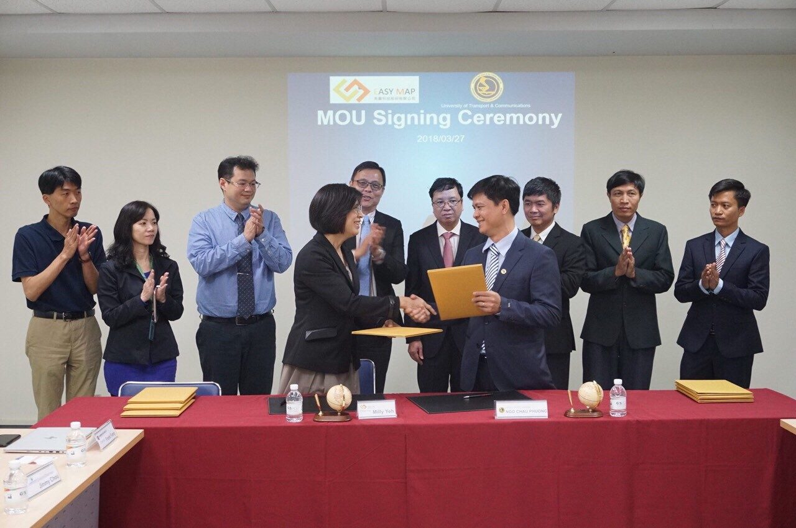
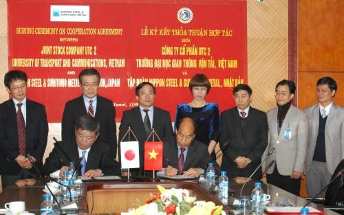
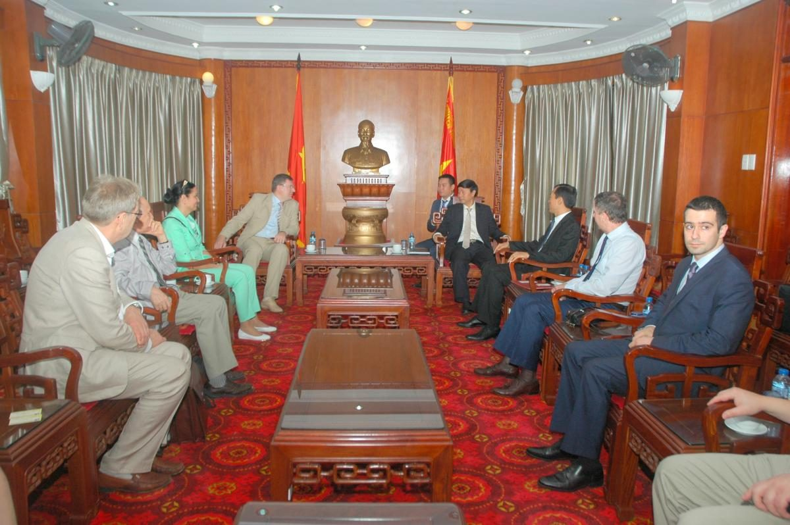
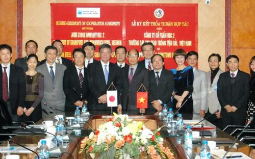

Đăng ngày: 18/04/2018

Tháp tùng Đoàn công tác tại Đài Loan - Trung Quốc của Phân hiệu Trường Đại học GTVT tại TP.HCM ngày 27/3/2018, Công ty Cổ phần UTC2 (UTC2 JSC) đã ký thỏa thuận hợp tác với 3 công ty: 1) Công ty TNHH Công nghệ GPS SkyEyes (SkyEyes), 2) Công ty Công nghệ số EasyMap (EasyMap) và 3) Công ty TNHH Công nghệ Thông Minh Focus (Focus).
Nội dung hợp tác tập trung vào nghiên cứu và phát triển công nghệ theo xu hướng cuộc cách mạng công nghiệp 4.0 trong lĩnh vực giao thông vận tải và xây dựng.
Đăng ngày: 08/01/2016

Mục đích của bản thỏa thuận nhằm thúc đẩy ứng dụng công nghệ và các sản phẩm thép xây dựng Nhật Bản cho các công trình xây dựng tại Việt Nam, tăng cường cung cấp các dịch vụ tư vấn kỹ thuật về việc áp dụng công nghệ và các sản phẩm thép tiên tiến Nhật Bản như cọc ống thép và cọc ván thép.
Đồng thời, hàng năm NSSMC cung cấp cơ hội cho sinh viên và các kỹ sư của UTC2 tiến hành các hoạt động nghiên cứu và trao đổi học thuật tại Việt Nam và Nhật Bản trong lĩnh vực công nghệ sản xuất thép và áp dụng cọc ống thép, cọc ván thép với các chuyên gia từ NSSMC và các trường đại học Nhật Bản. Ngoài ra, hai bên nghiên cứu việc hợp tác tương lai khác trong các lĩnh vực kinh doanh mà cả hai bên cùng quan tâm.


Chụp ảnh lưu niệm
Công ty Cổ phần UTC2 hợp tác với đối tác Đài Loan về nghiên cứu và phát triển công nghệ theo cuộc cách mạng công nghiệp 4.0